Furnish UI 审视：属性、操作与测量
2026-10-16 · 代码基线 797d74c · 对照 10 月 14–16 日改动 · 本轮为审视与调整建议，未修改生产代码。
当前主要矛盾是：柜体和设备能力已经细化，侧栏与画布仍把大量信息同时铺开。优先让用户清楚“正在编辑谁、尺寸从哪里量、修改影响什么、当前结果是否可信”。
范围与现有基础
查看近期提交、架构、测量文档及生产 UI 实现；在内置浏览器实际操作本地 HTTP 页面，检查 1440 × 1000 桌面与 390 × 844 窄屏。使用示例布局，试加洗碗机并转换一排旧厨房用于观察，随后均已撤销。未操作用户现有 Chrome 页面。
值得保留：底部画布工具分组、2D/3D 共用选择、柜体设计器的四个步骤、生产模型预览、独立草稿的保存/取消，以及空间检查区分“需处理”和“待核对”。这些已经形成基础，无需推翻。
优先调整
| 优先级 | 观察与影响 | 建议 | 证据 |
|---|
| P1 | 柜体摘要只显示宽 × 深，侧栏隐藏尺寸字段后也没有高度摘要。选中衣柜只能看到 2400 × 600，2200 的高度要进入设计器查看。 | 固定摘要显示名称、宽 × 深 × 高、底部标高、所在房间和锁定状态；厨房显示形状、各边长度与柜深/台面高摘要，区分整体外包尺寸。保留“柜体详细设计”入口。 | 步骤 2、3、7 |
| P1 | “精准距墙”和“四向最近净距”并排堆叠，两者可出现不同数字。灶具右侧距墙 5558 mm，右向台面净距 75 mm，用户容易误以为结果矛盾。 | 统一放入“定位与测量”，用“最近障碍 / 仅墙面 / 开孔边距”切换参照。每条显示起点、目标名称和方向；保留各自算法。悬停或聚焦同时高亮端点与参照实体。 | 步骤 4；属性 DOM 核实 |
| P1 | 绿色按图纸上下左右，橙色孔边按产品左右前后。全图中说明不可见，仅凭颜色和“左/右”难以理解旋转后的差异。尺寸、分界、开孔与净距同时出现。 | 明确“图纸方向”和“产品方向”，选中产品显示正面箭头；标签使用“外沿→墙”“孔边→模块”等短语。采用实线/虚线和文字区分，颜色辅助。总览、对象定位、模块编辑分级显示尺寸。 | 步骤 4、7；测量文档与源码 |
| P1 | 五个等宽模块的四条分界产生八个 554 mm 标签，选中整排时全部展开，挤压设备与净距标注。 | 整排只显示总长和简洁模块序号；聚焦某条分界才显示相邻两柜宽度。编辑时暂时降低其他尺寸的强调；当前分界突出，按回车或结束恢复总览。 | 步骤 7 |
| P1 | 3D 侧栏继续显示 2D 上/下/左/右数字，模型没有对应量线。洗碗机提示侧距 165、要求 200，但画面仅选中实体，用户无法直接看到预留区域和不足位置。 | 3D 默认呈现实体高度与底部/顶部标高、当前风险。点击检查项时定位两端实体并显示相关量线/保守包络；平面量距明确标记“2D 平面投影”，提供返回 2D 定位。先做对象相关量距，再考虑自由点测量。 | 步骤 6 |
| P1 | 新增洗碗机尚未填写价格，摘要与单价框显示 ¥0；当前价格说明与未填写状态不一致。安装风险在专用检查与通用布置检查重复，重要提示排在配色之后。 | 使用现有价格来源/状态显示“价格待填写 / 参考价 / 已确认价”，保留真实 0 元的表达。检查合并为一处，顶部展示数量摘要；条目采用“当前 165 / 要求 ≥200 / 不足 35 mm”，未知信息提供明确补录入口。模型默认高度 860 显示“布局初值，未核实”。 | 步骤 5、6；属性 DOM 核实 |
| P2 | “保存”在测量行中表示保存固定端点，容易被理解为建立随家具更新的尺寸约束。保存后移动家具不会更新该线，当前语义主要藏在段落末尾。 | 改为“留在图纸”或“固定此测量”，旁边短注“固定端点”。选中已保存线明确显示该属性；修改目标净距仍是移动家具操作。不要把原测量升级为关联约束而不设计新数据契约。 | 步骤 4、6；MEASUREMENTS.md、property-panel.js |
| P2 | 侧栏无选择时强调预算与采购；选中对象后整套页签消失，返回入口在长表单底部。位置坐标、单价、配色和安装参数混排。 | 保留稳定“当前对象 / 整案”导航。对象内组织“尺寸与安装、位置与净距、开合与结构、配色与采购”；默认展开与对象和当前任务相关的部分。坐标和长参数依据收进高级项。 | 步骤 1、2、5 |
| P2 | 详细设计的整体、模块、门扇尺寸一起标注；门板页全柜设置与分区设置同屏。窄屏预览下长说明让步骤页签直到屏幕下半部才出现。 | 按步骤切换默认尺寸：整体页看外形/标高，分区页看当前净宽/层高，门板页看当前门扇尺寸和配对。用“整柜默认 / 当前分区 / 当前门扇”标明作用域。保留完整清单；窄屏使用可收起预览、短操作提示与就地帮助。 | 步骤 3、8；门板页实看 |
| P2 | 窄屏 330 px 属性抽屉覆盖绝大部分 390 px 画布，输入距离时难以同时观察物体。字段本身未溢出，设计器底部取消/保存可见。 | 窄屏增加摘要态和展开态，修改位置/净距时收起到摘要并保留相关画面；数值定位对话框显示目标、方向、位移与预览。保留固定的完成/取消操作。 | 步骤 8 |
补充交互风险（源码证据，未在本轮逐项实点）：3D 单击折叠桌直接切换形态；柜门单击选择并延迟开合；其他家具单击选择。建议默认单击承担选择，选中后提供明确的开合/形态按钮与可命中的部件操作；保留快捷操作时增加可见状态与撤销反馈。新家具的形态控制应集中到摘要附近。
建议界面结构
“属性与方案”可保留总标题；下方保持稳定的“当前对象 / 整案”切换。选择对象后默认进入当前对象，退出选择回到整案。整案保留清单、报价、风格和项目入口；对象编辑不重复采购总览。
- 固定对象摘要：名称、产品/规格、完整尺寸、标高、所在房间；价格状态与锁定标签。柜体主操作为详细设计，设备主操作为安装关联或开合。
- 尺寸与安装：物体实体尺寸、安装基准、宿主与是否联动。区分实体高度、底部离地和顶部标高；水槽等自动派生高度明确标为来自承托台面。折叠桌区分原规格与当前占地。
- 位置与净距：以四向最近净距为默认，切换仅墙面或开孔边。高级坐标默认收起。每项可解释参照、可输入、可定位。
- 空间核对：需处理、待补信息、已核对分别计数，同一事项只列一次。点击条目使 2D/3D 显示相同问题，状态不凭颜色区分。
- 次要内容：配色、单价、采购、产品资料和参数依据按需展开；常用旋转、镜像、复制集中在已有浮动条，删除保持清晰但不抢占主要动作。
本轮实际检查步骤与截图
以下截图均于本轮捕获，保存后重新读取并目视检查。未将历史验收截图作为证据。
1. 桌面概览 · 可用，整案信息优先级需调整
预算、价格依据和采购入口占据首屏；底部工具分组已经清晰。
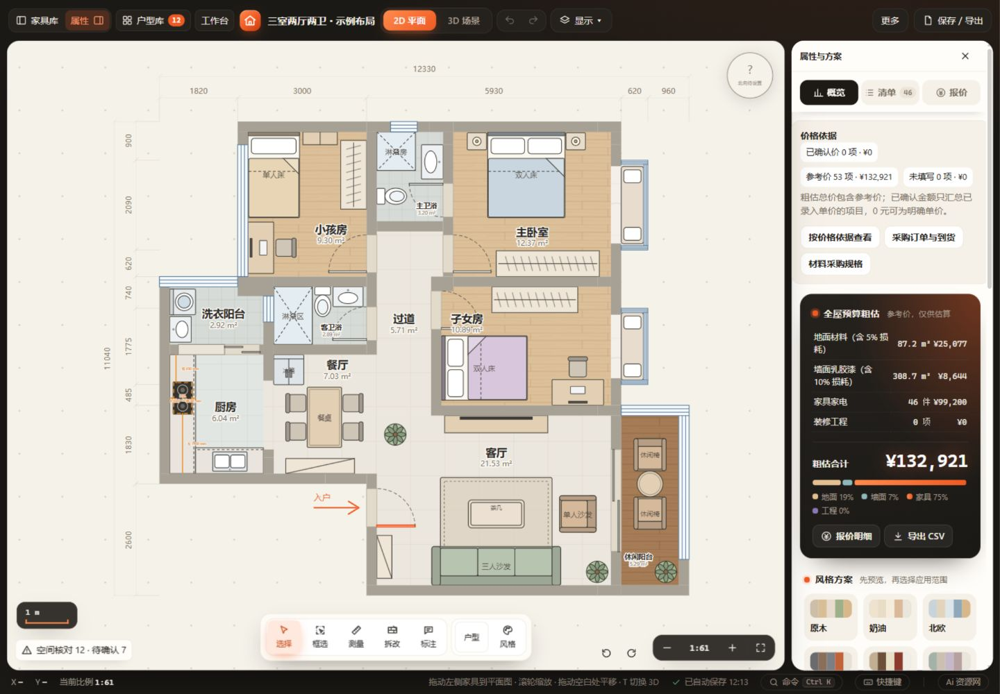
1440 × 1000，未选择物体。
2. 选择衣柜 · 可用，完整尺寸与快捷返回缺失
摘要缺高度，侧栏前段先呈现入口和长说明；尺寸调整基准、核对及测量继续向下堆叠。
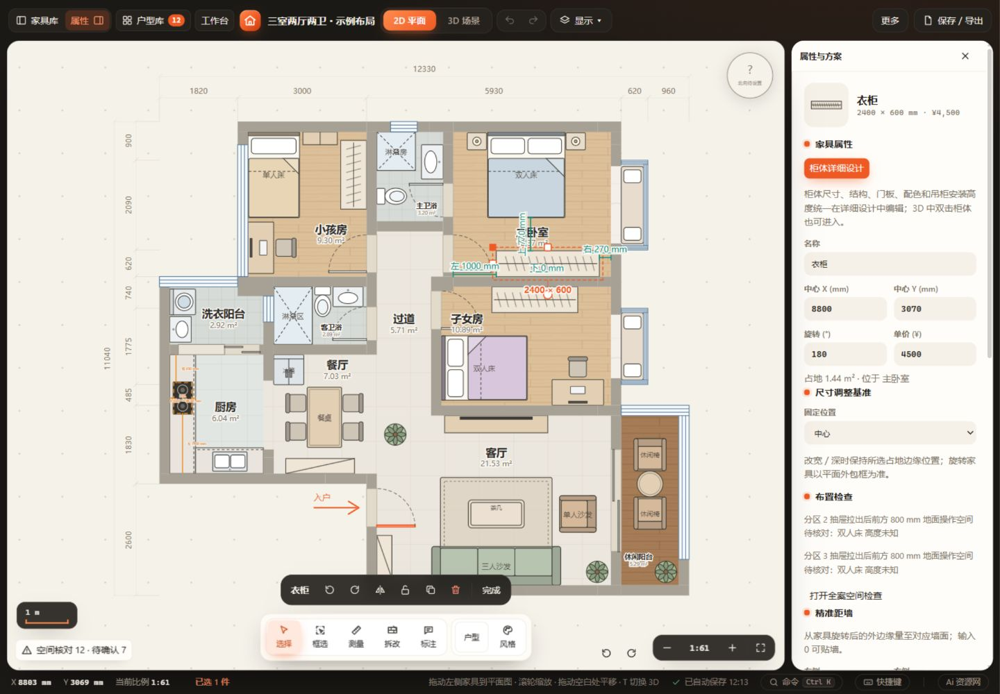
衣柜摘要仅 2400 × 600，实际高度在设计器为 2200。
3. 柜体详细设计与门板页 · 基础良好，尺寸层级和作用域可加强
四个步骤、生产预览与保存/取消适合保留；分区净宽与门扇宽高需按任务减少同时出现。门板页已实看，整柜默认与当前分区需进一步分组。
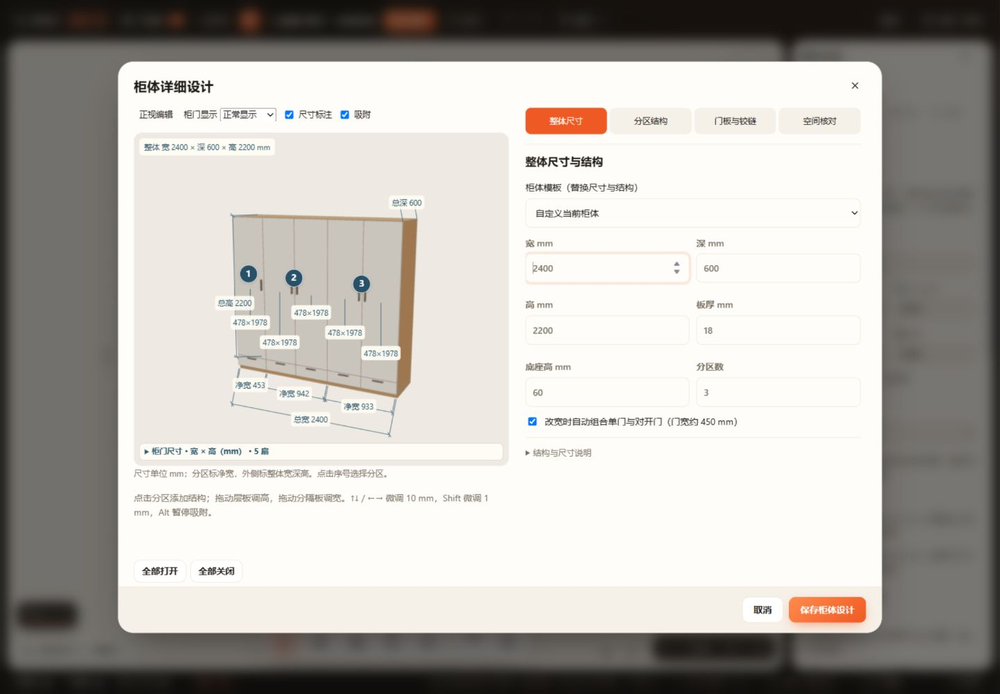
整体页已经显示逐扇门板尺寸。
4. 灶具选择与测量 · 功能存在，数值参照容易混淆
绿色净距与橙色开孔尺寸在全图尺度下邻近；侧栏开孔编辑可见，墙距和最近净距需向下滚动。通过 DOM 核实右侧墙距 5558，与台面边距 75 属于不同参照。
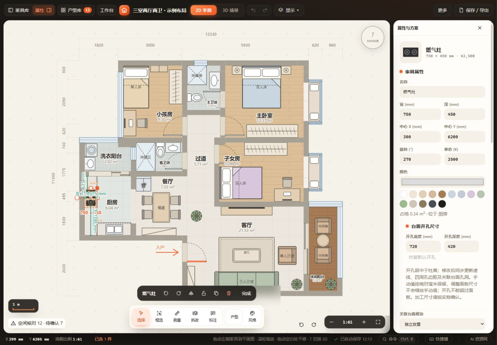
全图尺度下标签集中在灶具周边。
5. 试加洗碗机 · 可编辑，摘要价格和信息顺序需优先修正
机身高度、离地与开合字段已接入；尚未填写的价格显示 ¥0；安装检查被推到首屏底部，并与通用布置检查重复。
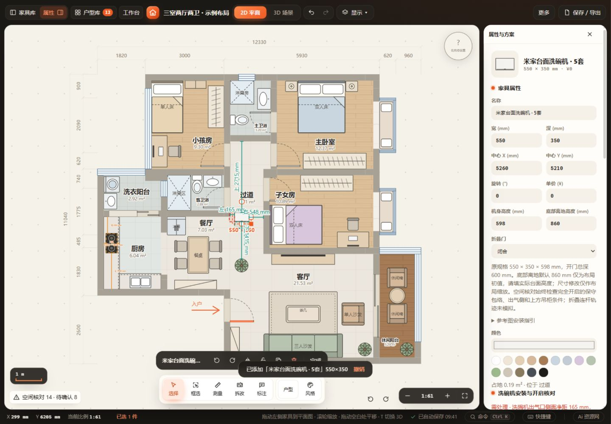
试加设备随后已撤销；此布局只用于审视信息呈现，不是安装建议。
6. 切换三维并查看净距与安装核对 · 选择延续，测量缺少画面对应
侧栏延续同一对象，但上下左右仍按 2D 图纸；选中包围框不能表达具体净距或安装预留。
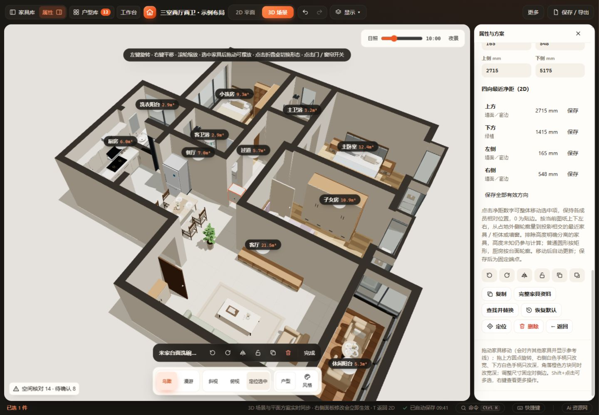
应标明平面投影参照，并提供返回平面的定位入口。
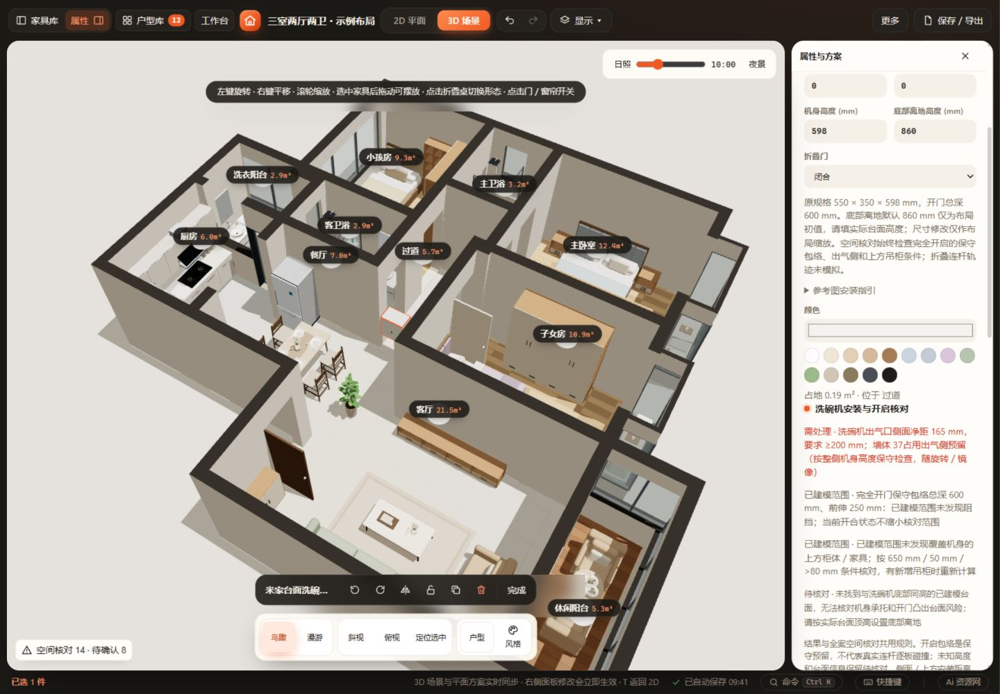
侧面 165 mm 与要求 ≥200 mm 的不足位置需要可见对应。
7. 旧厨房转换与模块编辑 · 可进入且可撤销，平面标签过密
转换入口明确提示移除自动吊柜；建议后续增加前后摘要。转换后一排五柜的四条分界出现八个相同宽度标签；生产设计器可正常进入。转换随后已撤销。
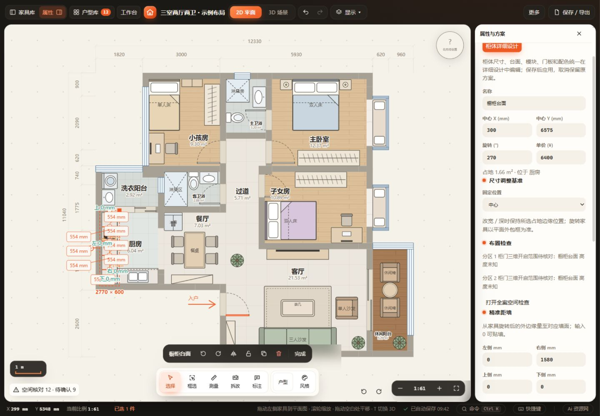
应在聚焦分界时才显示相邻两柜宽度。
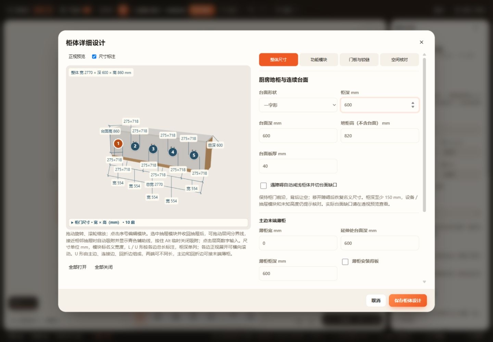
整体尺寸页需要聚焦外形与安装高度。
8. 390 px 窄屏设计与属性 · 能进入，编辑与观察画布分离
设计器底部动作可见；长帮助占据首屏，预览与表单上下分离。属性抽屉宽 330 px，占 390 px 视口大部分，未观察到字段横向溢出。
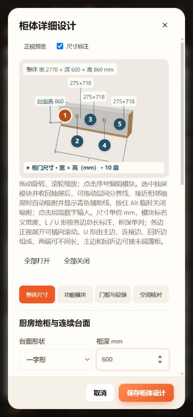
可收起预览与简短操作提示可以减少滚动。
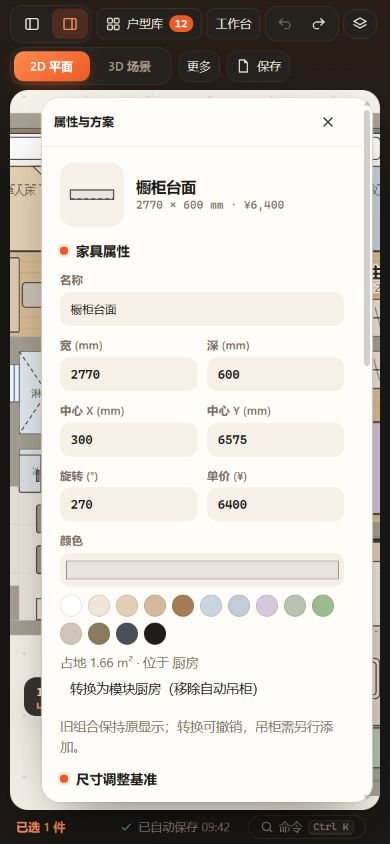
输入位置或净距时，建议保留可观察画布的摘要态。
实施顺序与验收重点
第一批：完整尺寸/标高摘要、未知价格表达、测量模式与方向说明、安装核对去重、五柜分界标签按需显示。这批直接减少误解，优先使用现有派生数据和 UI 状态。
第二批：稳定的对象/整案导航、柜体预览按步骤显示尺寸、3D 当前对象标高与问题高亮、窄屏摘要/展开态。
第三批：重叠对象选择菜单、平面与三维互相定位参照、开合/形态操作统一；任意三维点测量应另行定义几何和持久化语义。
界面调整沿用 product-rules、柜体/厨房核心和 mutate；不引入第二套保存或撤销机制。当前固定端点测量保持原保存契约。新 UI 需覆盖旧厨房、模块地柜、吊柜、烟机嵌合、水槽/灶具、洗碗机与折叠桌。
- 测量：0 接触与实际重叠状态可区分；未知高度有明确提示；旋转/镜像/图纸朝向后方向、端点与参照一致；模块边、台面边和紧邻墙可解释。
- 交互：输入或聚焦数值能定位相应对象；仅查看摘要不修改状态；草稿取消无变化；应用后一次撤销/重做；自动保存、刷新、项目往返保持。
- 柜体：预览读取生产模型；分区、模块与门扇保持稳定标识；选择哪个范围，表单与标注就对应哪个范围。
- 无障碍：画布净距按钮的 accessible name 应包含方向、数值和参照；当前源码多个按钮同名“编辑目标净距”。扩大数字命中区域、验证键盘焦点、避免仅凭橙/绿区分。未进行 WCAG 合规评估。
- 变更后运行 node scripts/check.cjs，按范围做实际视觉、窄屏、保存与撤销验收；修改加载机制时补验 HTTP 和 file://。
证据边界
本轮已完成实际 HTTP 操作、桌面与窄屏截图复核、对象选择、设计器进入/取消、试加与转换后的撤销。未做全量回归、file://、实机触屏、读屏器、全部键盘路径、全部户型、自由三维测量或安装要求真实性验证。没有修改生产代码，因此未运行代码回归；不据此宣称项目无剩余缺陷。
折叠桌点击优先级和固定测量保存语义由当前源码与文档核实；未把这些项描述为本轮完整交互回归。L/U 形复杂布局本轮未逐一实操，相关建议基于共用 UI 和文档。
报告及原始截图：output/ui-audit-20261016/。起始 Git 工作区干净；交付新增仅为此审视目录。